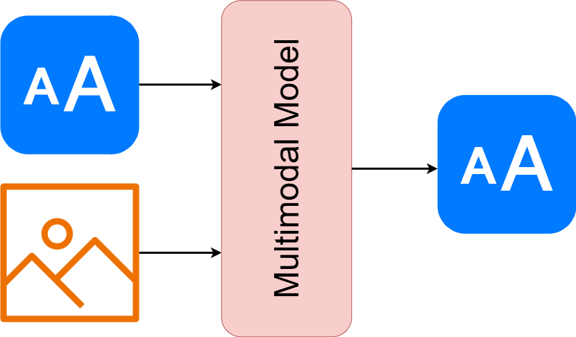
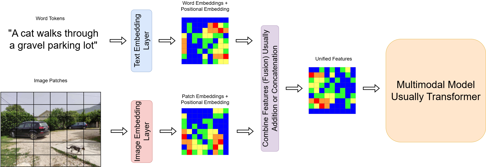
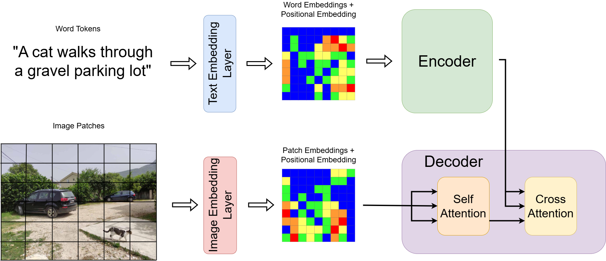
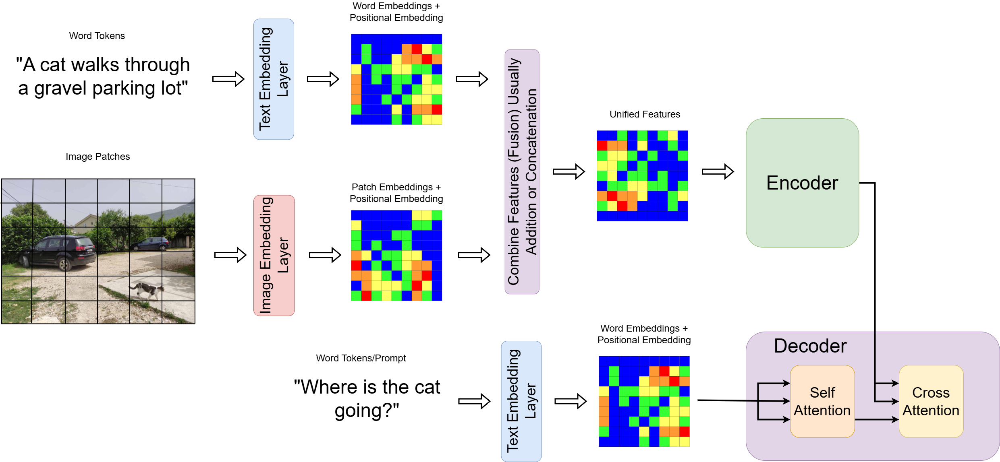

2026-04-07
Multimodal AI is a field of AI that deals with the interaction of multiple modalities (e.g. text, image, audio, video, etc.)
🖼️ Visual data: Images, videos, 3D models
💬 Textual data: Natural language, documents
🎵 Audio data: Speech, music, environmental sounds
📍 Sensor data: Temperature, motion, location

The goal is to create systems that can understand and reason across these different modalities, similar to how humans process multiple senses simultaneously.
Multimodal capability turns LLMs from chat systems into grounded agents that can perceive, reason, and act.
Takeaway: Classic tasks like captioning and VQA are useful benchmarks, but the high-impact application is building reliable multimodal agents.
Vision-Language models combine computer vision and natural language processing.
Key Components:
Popular Vision-Language Models:
Large scale models trained on massive datasets are often refereed to as Foundation Models
| Family | Typical Input -> Output | Training Signal | Fusion Style | Example | Best For |
|---|---|---|---|---|---|
| Contrastive Alignment | image + text -> embeddings | contrastive (match/non-match) | late or weak hybrid | CLIP | retrieval, zero-shot classification |
| Discriminative Multimodal | image + text -> label/span/answer | supervised task loss | early/hybrid | LayoutLMv3, VQA models | classification, structured prediction |
| Generative VLM (text output) | image + text -> text | autoregressive LM | hybrid cross-attention | Flamingo, PaLI | captioning, VQA, dialog |
| Generative T2I | text -> image | diffusion/AR image loss | n/a (text-conditioned generator) | DALL-E, SDXL | image synthesis |
How the modalities connect.
This is the core technical problem: aligning different signal spaces.
Contrastive Alignment
Key idea: “Do these belong together?”
Generative Modeling
Key idea: “Given X, generate Y”
Token Unification
Key idea: “All inputs are just tokens”
Where modalities interact
Early Fusion
Pros: strong interaction Cons: hard to scale across modalities
Late Fusion
Pros: modular Cons: weak cross-modal reasoning
Cross-Attention (dominant paradigm)
Key idea: “Language queries the image”
Unified Transformer
Trend: increasingly popular in large-scale systems

How it Works
Pros & Cons
LayoutLMv3 was proposed by Microsoft in 2023

How it Works
Pros & Cons
CLIP was proposed by OpenAI in 2021

How it Works
Pros & Cons
Flamingo (DeepMind) was proposed by DeepMind in 2022
Pathways Language and Image (PaLI) was proposed by Google in 2023
How modern multimodal systems are trained.
Paired Supervision
Web-Scale Weak Supervision
Instruction Tuning
In-Context Learning
How we determine whether a system is useful and reliable.
Task Performance
Grounding and Faithfulness
Robustness
Human-Centered Assessment
Traditional vision models are often trained with manually labeled datasets and specific tasks (e.g., ImageNet classification). CLIP challenges this paradigm by:
CLIP consists of two main components:
These encoders are trained to map images and their paired captions to a shared latent embedding space.
Let:
Then, the CLIP loss is the average of two cross-entropy losses:
\[ \mathcal{L}_{\text{CLIP}} = \frac{1}{2N} \sum_{i=1}^N \left[ -\log \frac{\exp(\text{sim}(I_i, T_i)/\tau)}{\sum_{j=1}^N \exp(\text{sim}(I_i, T_j)/\tau)} -\log \frac{\exp(\text{sim}(T_i, I_i)/\tau)}{\sum_{j=1}^N \exp(\text{sim}(T_i, I_j)/\tau)} \right] \]
After pretraining:
This allows classification on unseen datasets without retraining.
CLIP learns a joint latent space where:
The model is trained to create a modality-invariant space with strong semantic structure.
| Model | Goal | Input Alignment | Output |
|---|---|---|---|
| CLIP | Image-text retrieval, zero-shot | Separate encoders | Embeddings |
| Flamingo | Vision-language generation | Interleaved inputs | Text |
| DALL-E | Text-to-image generation | Text only | Image |
| PaLM-E | Multimodal generation/control | Perceiver + LM | Text |
Interleaved Vision-Language Modeling
In practice:
Prior models either:
Flamingo’s goal: Build a general-purpose multimodal model that can:
Flamingo builds on a frozen pretrained LLM (like Chinchilla) and adds:
Image Input → Vision encoder → Perceiver resampler → Latent visual tokens.
Text Input → Tokenized and embedded.
Interleaving: Model receives input sequences like:
<image> This is a dog. <image> It is playing fetch.Fusion: At cross-attention layers, visual tokens are injected and gated.
Output: Generated text (caption, answer, etc.)
Like GPT-3, Flamingo can do few-shot learning via in-context examples:
<image> What is in the image?
A dog.
<image> What is in the image?
A cat.
<image> What is in the image?→ Model predicts: “A horse.”
No finetuning required — just clever prompting.
Flamingo achieves SOTA on a wide range of vision-language tasks:
| Feature | CLIP | Flamingo |
|---|---|---|
| Modality Fusion | No (contrastive) | Yes (cross-attention) |
| Generation | No | Yes (text generation) |
| Visual Encoding | Single image | Multiple, interleaved images |
| Training Objective | Contrastive loss | Autoregressive LM |
| Usage | Retrieval, zero-shot class. | Captioning, VQA, QA, dialog |
PaLI (Pathways Language and Image) is a Google vision-language model family that reframes many image tasks as one interface: text generation from image + prompt.
Example:
<image> caption in Spanish:Strengths
Limits
LLaVA is an open recipe for building multimodal assistants that can see + follow instructions + respond in natural language.
Use cases
Caveat
Key intuition:
From taxonomy to practice
Agentic relevance
Important limitation